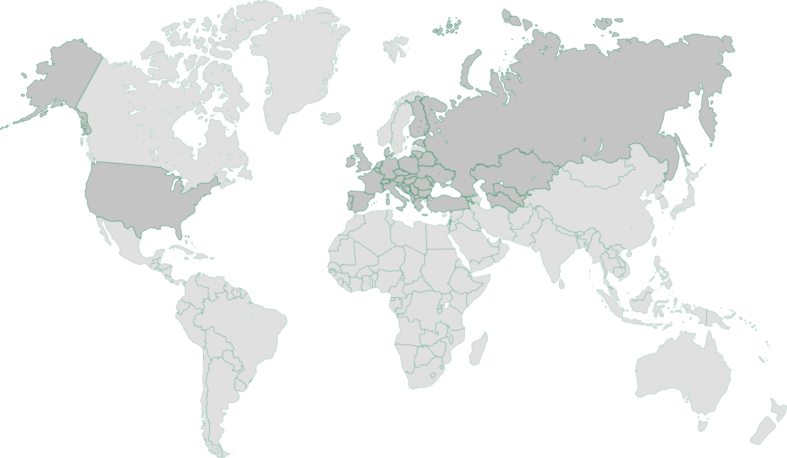

<section class="map" id="map">
  <div class="map__container container">
    <div class="map__image">
      <picture>
        <source type="image/webp" srcset="img/map/map-image.webp">
        
      </picture>
    </div>
  </div>
</section>
